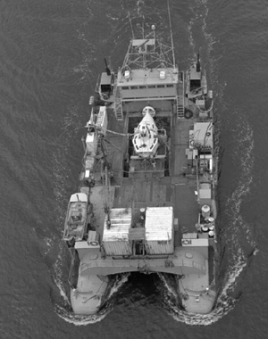

|  copyright - WHOI |
|
In March of 1965, Lulu headed to Florida, under tow, for the
first test as the submersible Alvin’s tender. The vessel began making
regular trips with Alvin aboard in May 1965. Lulu made 119
cruises in the North Atlantic Ocean, including the Mid-Atlantic Ridge,
Azores area, the Caribbean Sea, and in the eastern Pacific.
Lulu's last trip was in August of 1983. In September 1984, Lulu
was transferred to San Diego for Navy use as tender to the submersibles
Sea Cliff and Turtle, but was instead sold to private owners.